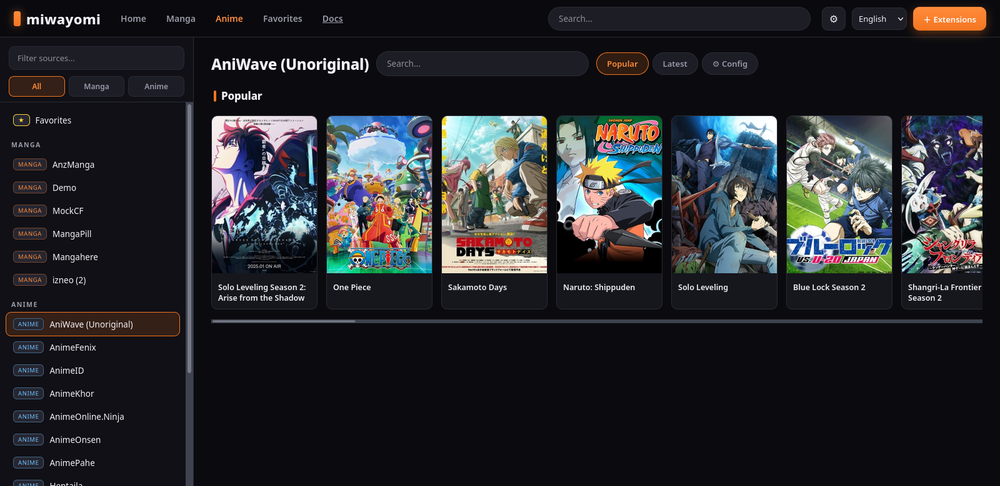
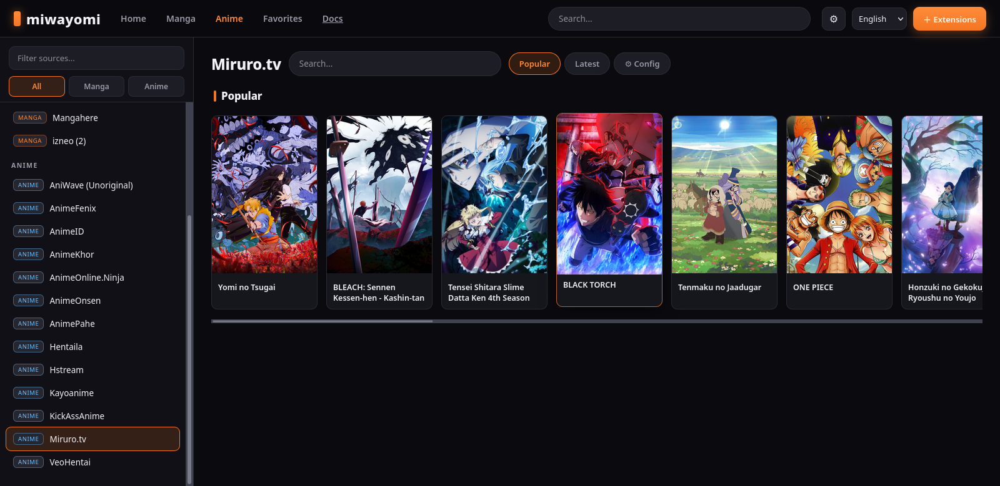
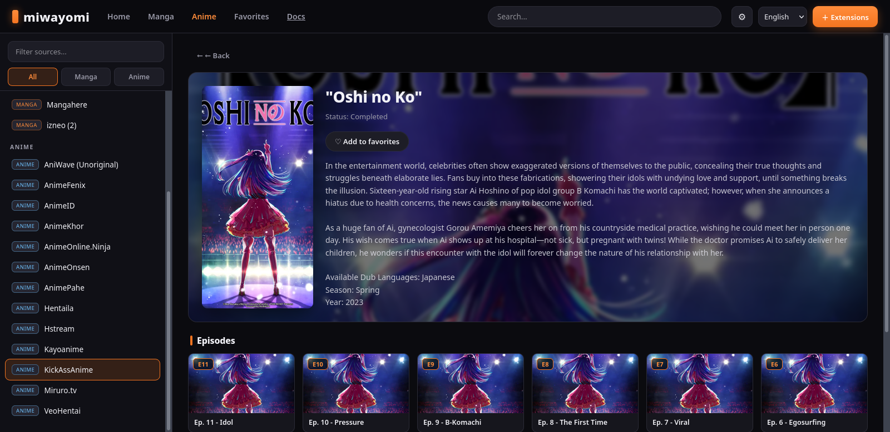
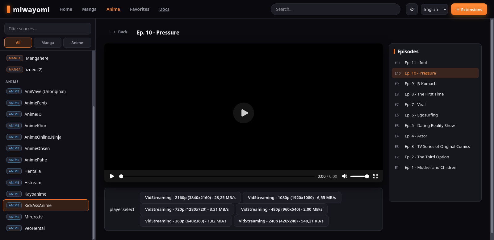

miwayomi.
A self-contained server that runs Aniyomi/Tachiyomi-format catalog extensions on the JVM — with no Android device, no emulator, no cloud. This page documents everything: how it works, its technical requirements, its API, and how to make it yours.
mi·wa·yo·mi — “beautiful reading”Get miwayomi
Pick your platform — both files come from the latest release and the app auto-updates itself.
All releases: github.com/miwayomi/miwayomi/releases · the Windows installer can also bundle a JRE for a fully standalone install.
The story behind the name
Every project deserves a story, and miwayomi got a good one by accident. It started the way most self-hosted projects start: with a problem and a grudge. The original plan was modest — a self-hosted anime player. It was meant to sit on top of Suwayomi, but that project kept hanging and crashing, eating RAM and fighting at every turn. After too many nights of a frozen server, the call was made: “fine, I’ll build my own.”
So miwayomi was rebuilt from a different angle — a lean execution engine modeled on the ideas of Aniyomi (itself born from Tachiyomi): the same extension format and the same familiar source API, but reimagined as a pure JVM service that needs no Android at all.
The name came from a manga. A character named Miwa caught the eye — it just sounded right — and turned into miwayomi without knowing what it meant. When it was finally looked up, it turned out to mean roughly “beautiful reading” (mi + yomi). A happy accident, and the best kind: the name picked the project before the project picked the name.
What miwayomi is (and is not)
| miwayomi is | miwayomi is not |
|---|---|
| An execution engine for Tachiyomi/Aniyomi-format extensions | A content host or “piracy box” |
| A JVM server (Ktor) that runs extensions without Android | An emulator or a phone-in-the-cloud |
| A REST API + web UI over your installed sources | A fork, rebrand, or replacement of any client |
| A teaching tool: learn to write your own compatible sources | A distributor of extensions or copyrighted media |
Design philosophy
- No Android required. The
android-compatmodule makes extensions believe there is an Android runtime. In reality there is none — just a carefully crafted shim on a plain JVM. - Lightweight by default. A single
javaprocess with a small heap and serial GC. Measured footprint: ~160–170 MB RSS at rest — comfortable on a 4 GB VPS. - Generic, not special-cased. The extension pipeline is format-driven: if an APK declares a source, miwayomi can load it.
- Chunked, memory-neutral streaming. Media is streamed in 64 KB chunks; nothing is buffered whole into RAM.
- Persistence that survives restarts. Cookies, resolved Cloudflare hosts, favorites, and reading progress live in SQLite.
- Respect for the sites. The proxy forwards the exact headers each source needs. Cloudflare challenges are resolved by you — your browser, your decision.
Technical requirements
| Requirement | Minimum | Notes |
|---|---|---|
| JDK | 21 (Temurin recommended) | Gradle downloads itself via the wrapper. |
| RAM | ~512 MB heap | Runs with -Xmx512m; measured ~160–170 MB RSS at rest. Adjust with MIWAYOMI_MEM. |
| Disk | A few hundred MB | Extensions (.apk + converted .jar), image cache, SQLite DB. |
| Chrome/Chromium | Optional | Only needed to solve Cloudflare challenges manually (bundled one or --chrome). |
| FlareSolverr | Optional | For automatic Cloudflare solving; falls back to the manual modal. |
| OS | Linux / macOS / Windows | JVM-based; tested on Linux. |
| Port | 4567 (default) | Configurable with --port. |
Build toolchain
- Kotlin 2.2.0 · JVM 21 · Gradle 8.10.2 (wrapper).
- Ktor 3.2.3 (Netty) — HTTP server.
- OkHttp 5.4.0 (with
okhttp-zstd) — HTTP client. - SQLite (sqlite-jdbc) — local persistence.
- ASM + dex2jar + apk-parser — the extension pipeline.
- GraalJS — QuickJs/Duktape stand-ins.
- Injekt — dependency injection.
How it works
Tachiyomi/Aniyomi extensions are APK files that announce their catalog classes in the manifest under meta-data (tachiyomi.extension.class / tachiyomi.animeextension.class). miwayomi turns those APKs into runnable sources on the JVM:
Extension (APK or repo-published JVM jar) → 1. apk-parser reads AndroidManifest.xml → 2. use the repo's JVM jar when published; otherwise dex2jar converts classes.dex to a .jar → 3. JarFixer auto-repairs bytecode on first load (invalid <init> owners from DEX→JVM) → 4. ChildFirstURLClassLoader loads the classes → 5. SourceFactory / Source instantiated & registered → 6. REST API + WebUI expose every catalog
Because the mechanism is generic, it works for any extension in that format — the format is the contract, not the vendor.
Architecture
| Module | Role |
|---|---|
android-compat/ | Minimal Android shim: the android.*/androidx.* classes extensions reference, plus the build-time android.jar stub. |
core-common/ | The network heart: OkHttp wiring, interceptors, cookie jar, SQLite store, FlareSolverr client, JS engine. |
source-api/ | The Aniyomi source API compiled for the JVM: source interfaces and models extensions implement. |
server/ | The Ktor application: extension pipeline, source managers, REST API, streaming proxy, Cloudflare modal, WebUI. |
data/ | Runtime data: data/extensions/*.apk (+ converted or repo-published .jar), preferences, SQLite + image cache. |
Codebase map (file by file)
server/ — the application
core-common/ — the network heart
source-api/ — the extension contract
android-compat/ — the Android shim
The Web UI
REST API
Base URL: http://<host>:4567/api/v1 — JSON in, JSON out.
| Method | Path | Purpose |
|---|---|---|
| GET | /health | Liveness + source counts. |
| GET | /sources | All installed manga & anime sources. |
| GET | /update | Current version, latest GitHub release, update status. |
| GET | /manga/{id}/popular|latest|search?query=&page= | Manga catalog. |
| GET | /manga/{id}/details|chapters|pages?url= | Manga data. |
| GET | /anime/{id}/popular|latest|search | Anime catalog. |
| GET | /anime/{id}/details|episodes|seasons|hosters|videos|hosterVideos | Anime data + streams. |
| GET | /proxy|/hls|/dash|/dashseg | Media proxy (images are cached on disk). |
| GET/POST | /sources/{id}/prefs | Source preferences. |
| GET/POST/DELETE | /favorites… | Favorites + progress. |
| GET/POST/DELETE | /watch | Anime watch history (continue watching / resume). |
| GET/POST | /extensions/repo|install|uninstall | Extension manager. |
| GET/POST | /cf/… | Manual Cloudflare resolution. |
# Health curl http://localhost:4567/api/v1/health # → {"status":"ok","service":"miwayomi","mangaSources":7,"animeSources":13} # Popular manga from a source, page 1 curl "http://localhost:4567/api/v1/manga/8448310129093543312/popular?page=1" # Chapters of a manga (url = the source's own URL, percent-encoded) curl "http://localhost:4567/api/v1/manga/8448310129093543312/chapters?url=%2Fmanga%2F1"
The Web UI
The web UI is a single-page app with a Crunchyroll-style structure: top navigation, a filterable source sidebar, a home with hero and rows, a detail page with hero and numbered episode/chapter cards, a continuous manga reader, and a video player with an episode list.






Highlights
🔍 Filterable sidebar
Filter sources by name and toggle All / Manga / Anime.
🏠 Home with hero
Hero banner plus horizontal rows of source cards.
🖼️ Chapter thumbnails
Each chapter shows its first page, lazy-loaded and cached.
▶ Player with episodes
Video player with a side episode list and quality selector.
📖 Continuous reader
Manga pages flow with no gaps — ideal for manhwa.
🌐 i18n
English & Spanish; add a lang/<code>.json for more.
▶ Continue watching
Home row from SQLite history — resumes each episode where you left off.
🔀 Player extras
Invert episode order, auto-play next, auto-select source, restart.
📡 AniList sync
Connect your account to push watched-episode progress.
Customizing the UI
Everything about the interface lives in server/src/main/resources/webui/. You never touch the backend to change the look — edit these files and rebuild:
| File | What it controls |
|---|---|
index.html | The page shell: header, navigation, sidebar, modals, script tags. |
style.css | Everything visual. All colors are CSS variables at the top (:root). |
app.js | Behavior: views, rendering, API calls, i18n, players. |
lang/*.json | User-visible strings, one file per language. |
Change the theme (colors)
Open style.css and edit the variables at the top. For example, to go from the orange accent to a violet one:
/* style.css :root */ :root { --accent: #7c3aed; /* was #f47521 */ --accent-hi: #a78bfa; /* was #ff8c3b */ }
The background, panels, borders, text, and buttons all reference variables, so one change propagates everywhere.
Add a language
# 1. Copy the English file cp lang/en.json lang/fr.json # 2. Translate the values (keep the keys), then register it: # in index.html: <option value="fr">Français</option> # in app.js: AVAILABLE_LANGS = ["en","es","fr"]
Add a new view or section
- Write a render function in
app.jsthat fills#content(look atrenderHomeorrenderDetailas templates). - Add a button/nav item in
index.htmlthat calls it. - Style the new elements in
style.cssreusing the variables. - Any user-visible text goes through
t("key")and is added tolang/en.jsonandlang/es.json.
Apply your changes
cd /home/asking/Escritorio/miwayomi ./gradlew :server:installDist # repackages the WebUI into the distribution ./start.sh # restart
app.js, always validate first: node --check server/src/main/resources/webui/app.js. If the port is busy after a rebuild, kill the old process: pkill -9 -f "server/build/install/server/lib".Building and running
Requirements
- JDK 21 (Temurin recommended). Gradle downloads itself via the wrapper.
- Chrome/Chromium only if you want to solve Cloudflare challenges manually.
Quick start (desktop / JAR)
java -jar miwayomi-all.jar (from the
Releases page) just works:
it picks a free port, starts and opens your default browser. The launcher
./miwayomi / miwayomi.bat opens a dedicated app window
(Chrome/Edge --app) and stops the server when you close it.
java -jar miwayomi-all.jar # any OS — auto port + opens the browser ./miwayomi # desktop launcher (app window)
Force a port with --port 4567; --no-open disables opening a browser.
Auto-update
On startup the server checks GitHub for a newer release: if one exists it downloads the new JAR
and the WebUI shows a banner ("New version available — close and relaunch to apply"). The next launch
applies it. Status: GET /api/v1/update.
Windows installer
packaging/build-installer.sh (needs NSIS: sudo apt install nsis /
brew install nsis / yay -S nsis) produces
packaging/dist/miwayomi-setup-<version>.exe. Pass
JRE_ZIP=temurin-21-windows-x64.zip to bundle a JRE for a standalone installer.
A GitHub Actions workflow also builds it automatically on each release.
Lightweight build (recommended for a VPS)
./gradlew :server:installDist ./gradlew --stop # frees the Gradle daemons (RAM) ./start.sh # uses the distribution if present (headless)
The JVM runs with -Xmx512m -Xms64m -XX:MaxMetaspaceSize=256m -XX:+UseSerialGC. Override RAM with MIWAYOMI_MEM="-Xmx768m" ./start.sh.
Dev mode
./gradlew :server:run --args="--data ./data --port 4567 --flaresolverr http://127.0.0.1:8191"
CLI options
| Flag | Default | Meaning |
|---|---|---|
--port, -p | auto (free) | Listen port; omit for an automatic free port. |
--host, -h | 0.0.0.0 | Listen address. |
--data, -d | ./data | Data directory (extensions, prefs, cache). |
--flaresolverr, -f | http://127.0.0.1:8191 | FlareSolverr URL (blank disables). |
--chrome | auto | Chrome/Chromium path for the manual CF modal. |
--no-open | off | Do not open a browser on start (headless). |
Verify
curl http://localhost:4567/api/v1/health
Then open http://localhost:4567.
Creating your own extension
Option A — a built-in source (fastest)
Every source is an object implementing the MangaSource contract. Write a Kotlin class in server/src/main/kotlin/miwayomi/builtin/ — exactly like DemoSource.kt — rebuild, and it appears in /sources.
Option B — a real extension APK
Three things: a manifest, a source class, and a build that produces an APK.
1. The manifest
<manifest xmlns:android="http://schemas.android.com/apk/res/android"> <application> <meta-data android:name="tachiyomi.extension.class" android:value="com.example.demolib.DemoLibFactory" /> </application> </manifest>
The class must be a SourceFactory (createSources(): List<MangaSource>) or a direct MangaSource subclass.
2. The source (original example)
package com.example.demolib import eu.kanade.tachiyomi.source.online.HttpSource import eu.kanade.tachiyomi.source.model.* class DemoLib : HttpSource() { override val name = "DemoLib" override val lang = "en" override val baseUrl = "https://demo-manga.example" override val supportsLatest = true override fun getFilterList() = FilterList() override fun popularMangaRequest(page: Int) = GET("$baseUrl/popular?page=$page", headers) override fun popularMangaParse(response: Response) = response.use { parseMangaPage(it) } // ... search, latest, details, chapters, pages ... } class DemoLibFactory : SourceFactory { override fun createSources() = listOf(DemoLib()) }
3. Build & install
- Compile against the
source-apimodule in this repository. - Produce an APK, then drop it into
<data>/extensions/and restart — or usePOST /api/v1/extensions/install. - Confirm with
curl http://localhost:4567/api/v1/sources.
Streaming internals
- HLS (
.m3u8) —/hlsrewrites the manifest (includingURI=insideEXT-X-KEY/EXT-X-MAP) and proxies segments with Range support. - DASH (
.mpd) —/dashrewritesmedia=/initialization=;/dashsegresolves base + relative path, keeping$Number%05d$templates raw. - Direct files —
/proxystreams with Range support.
All proxies stream in 64 KB chunks (no full-file buffering). MimeTypes.kt infers the correct content type even when the CDN sends application/octet-stream. Images are cached to disk (data/cache/images/) so thumbnails, covers, and manga pages load instantly on repeat visits; video is deliberately not cached so Range/206 stays correct.
Cloudflare challenges
Some sources sit behind Cloudflare’s anti-bot. miwayomi gives you two ways to unlock them:
- Manual (always available): the web UI opens a modal with a live headless Chrome (CDP). You solve the challenge by hand, miwayomi captures the cookies (including HttpOnly
cf_clearance) and remembers the Chrome UA for that host. Subsequent requests fly through (~1 s). - FlareSolverr (optional): tries to solve automatically; if it fails or is absent, the manual modal appears.
Local persistence
Everything is stored in data/cache/miwayomi.db (SQLite, WAL mode):
| Store | What it holds |
|---|---|
kv_store | Key-value settings (including resolved hosts cf_ua_*). |
cookies | Cloudflare and site cookies, persisted across restarts. |
favorites | Favorites + last-read chapter per entry. |
watch_history | Anime watch progress per episode (resume position, duration, episode number). |
Source preferences live in data/prefs/source_<id>.properties, and the proxied-image cache in data/cache/images/.
Troubleshooting
| Symptom | Cause & fix |
|---|---|
Stub! on an android.* method | Only a stub in android.jar; implement it in android-compat and regenerate the jar. |
VerifyError: ... not assignable to ContextWrapper | The Context hierarchy is wrong; keep Application : ContextWrapper : Context. |
Search returns HTTP 500 (VerifyError: Call to wrong <init> method) | The extension jar was corrupted by DEX→JVM conversion. Use v0.2.5+ (auto-repairs jars on first load) or reinstall the extension; a repo-published JVM jar is used automatically. |
| Port already in use after rebuild | Old process alive: pkill -9 -f "server/build/install/server/lib". |
| One package shows as dozens of sources | A single APK can declare many mirrors; the UI groups them by package. |
| Source preferences don’t appear | PreferenceScreen must alias androidx.preference.PreferenceScreen (it does in source-api). |
| Incremental build seems stale | Use ./gradlew :server:clean :server:installDist. |
Roadmap
- More web UI views — filters, in-place sorting, page caching.
- Per-source JS engines — isolate QuickJs/Duktape per extension.
- Torrent streaming — the stub exists in
core-common. - Your own sources — follow the guide above; a source you wrote is the best contribution to your own server.
Good first places to read the code: builtin/DemoSource.kt, extension/JarFixer.kt, and api/StreamingRoutes.kt.
Glossary
| Term | Meaning |
|---|---|
| Extension | An APK in the Tachiyomi/Aniyomi format that declares one or more sources. |
| Source | A catalog provider (manga or anime) implementing the source API. |
| Factory | SourceFactory/AnimeSourceFactory; how one APK provides several sources. |
| Shim | The android-compat layer that makes extensions believe Android exists. |
| JVM jar | A desktop JVM jar some repositories publish alongside the APK; loaded directly, skipping the DEX conversion. |
| JarFixer | The ASM pass that repairs the bytecode corruption DEX→JVM conversion leaves behind (invalid <init> owners), applied automatically on first load. |
| HLS / DASH | Adaptive streaming formats (.m3u8 / .mpd) transparently proxied. |
| CDP | Chrome DevTools Protocol, used for the manual Cloudflare modal. |
| SQLite store | Local persistence for cookies, favorites, and settings. |
Legal notice & disclaimer
miwayomi is an execution engine, not a content service.
- No content, no distribution. miwayomi does not create, host, store, index, link to, distribute, or recommend any content, media, source, or extension repository. It ships no content itself; the built-in demo source is fully offline.
- Third-party extensions. Extensions in the Tachiyomi/Aniyomi format are third-party software written and distributed by their own authors. miwayomi merely loads and runs them at the user's request. Their behavior and the sites they interact with are the sole responsibility of their authors and of the user who installs them.
- User responsibility. You are solely responsible for the extensions you install and the content you access; for complying with the laws of your jurisdiction and the terms of service of any site you interact with; and for not using this software to infringe copyright, bypass access controls you are not authorized to bypass, or redistribute content you do not have rights to.
- No affiliation. miwayomi is not affiliated with, endorsed by, sponsored by, or a fork of Tachiyomi, Aniyomi, or any related project. Its design is inspired by the Tachiyomi/Aniyomi open-source ecosystem, and portions of their source APIs are reused under Apache-2.0 — see
NOTICE-ANIYOMI.mdfor attribution. - Trademarks and content. All product names, logos, brands, cover art, titles, and other marks that appear in this project or its screenshots belong to their respective owners and are used only for identification or illustration purposes.
- No warranty. This software is provided “as is”, without warranty of any kind, express or implied. The author(s) are not liable for any damages arising from its use.
- If you use this software, you do so at your own risk and under your own responsibility.